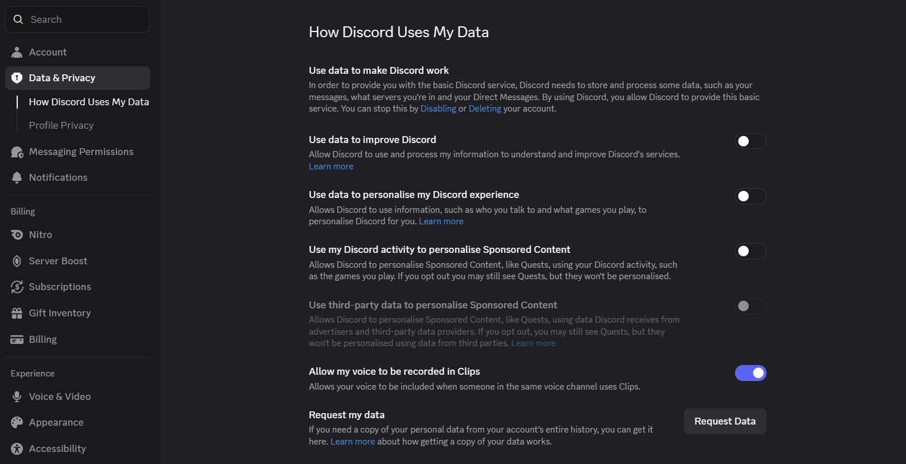
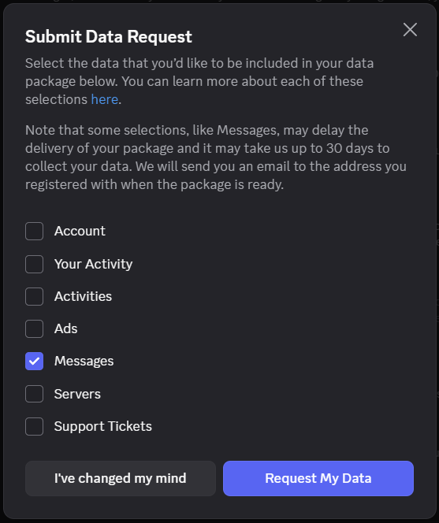
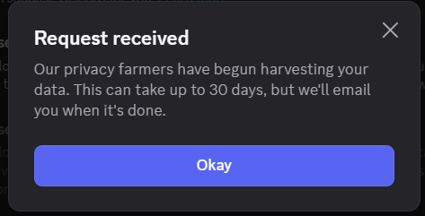

HOW TO GET YOUR DISCORD DATA
package.zip1
Navigate to User Settings > Data & Privacy
In Discord, click User Settings (gear icon next to your avatar), select Data & Privacy from the sidebar, and scroll down to Request my data.

2
Select "Messages" Only for Faster Delivery
Click Request Data. In the dialog, check Messages and uncheck everything else (Account, Activity, Ads, Servers, Support Tickets).

3
Confirm & Download the Archive
Submit your request. When Discord finishes packaging your messages, they will email you a download link for package.zip.
